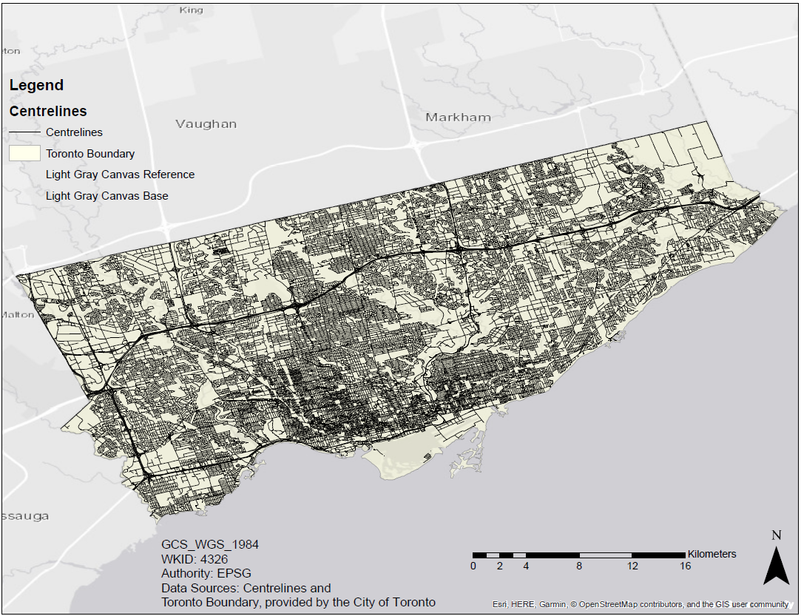
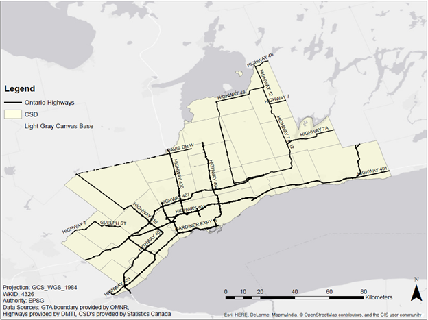

- Wazted is a Web Mapping Application used to vizualize Motor Vehicle Collisions (MVCs) in the GTA.
It is comprised of two web maps: Toronto Roads and GTA Highways.
- It is able to show vulnerability based on selected factors and also show accident density based on temperature.
- Wazted should be used as a reference map so that drivers will be able to see which areas on the map appear vulnerable depending on certain factors.
- Since they can see the level of vulnerability in a specific area, they are able to act more cautiously.
Click on either Toronto Roads or GTA Highways to view a map.
Click on a dropdown to get started!
Choose up to 3 factors you are most interested in and click calculate to view the results
- OR -
choose a temperature quantile to see the number of accidents within a certain temperature range.
Click on any road segment for specific details.
There are legends underneath the map that explain the colours of the road segments.
Toronto Roads covers the City of Toronto.

GTA Highways covers the Greater Toronto Area. This includes the City of Toronto, and the Regions of Durham, Halton, Peel, and York.

Wazted uses factors that have the highest association count with collisions. Here are those factors:
Wazted is a portmanteau of Waze and Wasted. Waze is a routing app that is used to avoid traffic and MVCs, so Wazted is an app to map out MVC vulnerability.
It's pronouced ways-ted or /weɪztəd/, if you want to be technical.